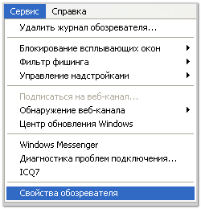
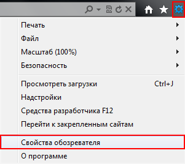
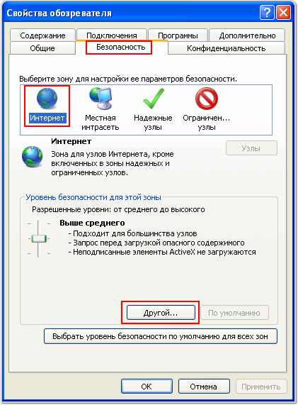
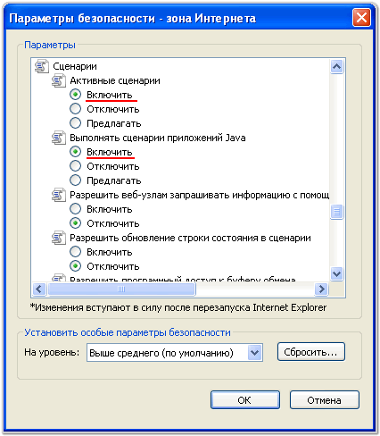
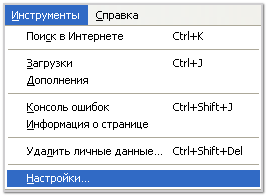
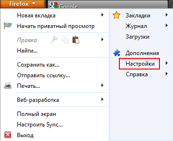
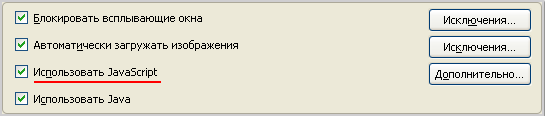
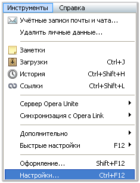
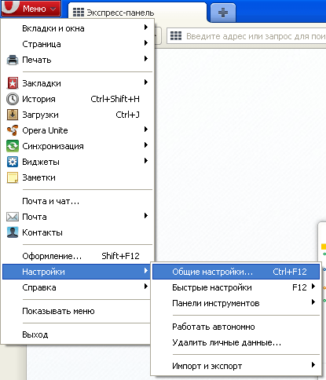
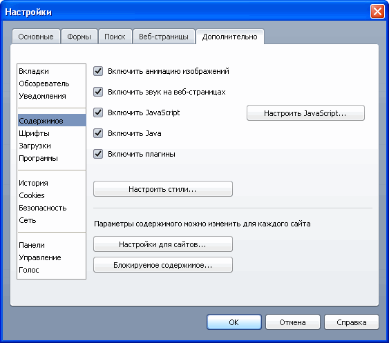

(выберите в меню Ваш браузер)
- В меню Tools (Сервис) выберите пункт Internet Options (Свойства обозревателя).
 
- Откройте вкладку Security (Безопасность) и выберите зону Интернет (Internet). Нажмите на кнопку Custom level (Другой).

- В разделе Scripting (Сценарии), в подразделах Active scripting (Активные сценарии) и Scrtpting of Java applets (Выполнять сценарии приложений Java) выберите пункты Enable (Разрешить).

- Нажмите «ОК». Перезагрузите страницу, для этого нажмите кнопку F5.
- В меню Tools (Инструменты) выберите пункт Options (Настройки).
 
- Перейдите в раздел Content (Содержимое) и установите флажки рядом с Enable JavaScript (Использовать JavaScript) и Enable Java (Использовать Java).

- Нажмите «ОК». Перезагрузите страницу, для этого нажмите кнопку F5.
- В меню Tools (Инструменты) выберите пункт Preferences (Настройки).
 
- Перейдите на вкладку Advanced (Дополнительно). Выберите пункт меню Content (Содержимое) и установите флажки рядом с Enable JavaScript и Enable Java.

- Нажмите «ОК». Перезагрузите страницу, для этого нажмите кнопку F5.
- Нажмите на значок «гаечный ключ», расположенный справа сверху;
- Перейдите в раздел «Параметры»;
- Перейдите на вкладку «Расширенные»;
- Нажмите «Настройки содержания..»;
- В меню слева выберите «JavaScript»;
- Установите галочку напротив «Разрешить всем сайтам использовать JavaScript»;
- Нажмите «Закрыть». Перезагрузите страницу, для этого нажмите кнопку F5.
- Выберите пункт меню «Правка» или нажмите на значок «шестеренка», расположенный справа сверху, в более поздних версиях браузера;
- Перейдите на вкладку «Безопасность»;
- Установите галочку напротив «Подключить JavaScript»;
- Нажмите на значок «крестик» для того, чтобы сохранить изменения. Перезагрузите страницу, для этого нажмите кнопку F5.